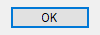
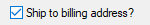
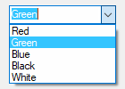
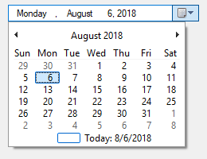
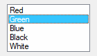
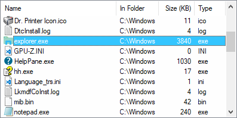
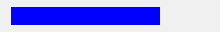
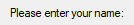
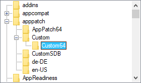

GUI control types are elements of interaction which can be added to a GUI window using Gui.Add.
Allows embedding ActiveX components such as the MSIE browser control into a GUI window.
Syntax:
GuiCtrl := MyGui.Add("ActiveX", Options, ComponentName) GuiCtrl := MyGui.AddActiveX(Options, ComponentName)
Example:
WB := MyGui.Add("ActiveX", "w980 h640", "Shell.Explorer")
When the control is created, the ActiveX object can be retrieved via GuiControl.Value.
To handle the events exposed by the ActiveX object, use ComObjConnect.
To determine the type of the ActiveX object, use ComObjType.
Gui example #10 demonstrates a simple web browser created via the WebBrowser control.
A pushbutton, which can be pressed to trigger an action.
Syntax:
GuiCtrl := MyGui.Add("Button", Options, Name) GuiCtrl := MyGui.AddButton(Options, Name)
Example:
MyBtn := MyGui.Add("Button", "Default w80", "OK")
MyBtn.OnEvent("Click", MyBtn_Click) ; Call MyBtn_Click when clicked.
Appearance:

Type: String
In addition to the general options and styles, the following are supported or noteworthy:
Default: Makes the button the default button. The default button's Click event is automatically triggered whenever the user presses Enter, except when the keyboard focus is on a different button or a multi-line edit control having the WantReturn style.
(Uncommon numeric styles): See the Button styles table for a list.
Type: String
The display name of the button, which may include linefeeds (`n) to start new lines.
An ampersand (&) may be used to underline one of the letters, such as the letter P in "&Pause". This allows the user to press Alt+P as a shortcut key. To display a literal ampersand, specify two consecutive ampersands (&&).
Whenever the user clicks the button or presses Space or Enter while it has the focus, the Click event is raised.
The DoubleClick, Focus and LoseFocus events are also supported. As these events are only raised if the control has the BS_NOTIFY (0x4000) style, it is added automatically by GuiControl.OnEvent.
Use GuiControl.Opt to change the default button later on. For example, OtherBtn.Opt("+Default") would change the default button to another button, while MyBtn.Opt("-Default") would make the window no longer have a default button.
Known limitation: Certain desktop themes might not display a button's text properly. If this occurs, try including -Wrap (minus Wrap) in Options. However, this also prevents having more than one line of text.
A small box that can be checked or unchecked to represent On/Off, Yes/No, and so on.
Syntax:
GuiCtrl := MyGui.Add("CheckBox", Options, Caption) GuiCtrl := MyGui.AddCheckBox(Options, Caption)
Example:
MyCB := MyGui.Add("CheckBox",, "Ship to billing address?")
Appearance:

Type: String
In addition to the general options and styles, the following are supported or noteworthy:
Check3: Enables a third state that indicates the checkbox is neither checked nor unchecked.
Checked: The checkbox starts off with a checkmark. The word Checked may optionally be followed immediately by a 0, 1, or -1 (or the word Gray) to indicate the starting state (unchecked, checked, or indeterminate). In other words, "Checked" and "Checked" VarContainingOne are the same.
(Uncommon numeric styles): See the CheckBox styles table for a list.
Type: String
The label to display to the right of the box. This label is typically used as a prompt or description, and it may include linefeeds (`n) to start new lines.
An ampersand (&) may be used to underline one of the letters, such as the letter P in "&Pause". This allows the user to press Alt+P as a shortcut key. To display a literal ampersand, specify two consecutive ampersands (&&).
GuiControl.Value returns the number 1 for checked, 0 for unchecked, and -1 for indeterminate. Gui.Submit stores the same values.
Whenever the checkbox is clicked, it automatically cycles between its two or three possible states, and then raises the Click event, allowing the script to immediately respond to the user's input.
The DoubleClick, Focus and LoseFocus events are also supported. As these events are only raised if the control has the BS_NOTIFY (0x4000) style, it is added automatically by GuiControl.OnEvent. This style is not applied by default as it prevents rapid clicks from changing the state of the checkmark (such as if the user clicks twice to toggle from unchecked to checked and then to indeterminate).
If a width (W) is specified in Options but no rows (R) or height (H), the control's text will be word-wrapped as needed, and the control's height will be set automatically.
Known limitation: Certain desktop themes might not display a checkbox's text properly. If this occurs, try including -Wrap (minus Wrap) in Options. However, this also prevents having more than one line of text.
A list of choices that is displayed in response to pressing a small button, but also permits free-form text to be entered as an alternative to picking an item from the list.
Syntax:
GuiCtrl := MyGui.Add("ComboBox", Options, Choices) GuiCtrl := MyGui.AddComboBox(Options, Choices)
Example:
MyCB := MyGui.Add("ComboBox",, ["Red", "Green", "Blue", "Black", "White"])
Appearance:

Type: String
In addition to the general options and styles, the following are supported or noteworthy:
ChooseN: Specify for N the number of an item to be pre-selected. For example, Choose5 would pre-select the fifth item (as with other options, it can also be a variable such as "Choose" Var). To change the choice after the control has been created, use GuiControl.Choose.
Uppercase or Lowercase: Converts all items in the list to uppercase or lowercase.
Sort: Sorts the contents of the list alphabetically, which also affects any items added later via GuiControl.Add. The Sort option also enables incremental searching whenever the list is dropped down; this allows an item to be selected by typing the first few characters of its name.
Limit: Restricts the user's input to the visible width of the ComboBox's edit field.
Simple: Makes the ComboBox behave as though it is an edit field with a ListBox beneath it.
Wn: Sets the width of the control. For example, specifying w400 would make the control 400 pixels wide. If omitted, the default is 15 times the current font size.
Rn or Hn: Sets the height of the popup list. For example, specifying r7 would make the list 7 rows tall, while h400 would set the total height of the selection field and list to 400 pixels. If both R and H are omitted, the list will automatically expand to take advantage of the available height of the user's desktop.
(Uncommon numeric styles): See the ComboBox styles table for a list.
Type: Array
An array of choices such as ["Red", "Green", "Blue"]. To add or remove choices after the control has been created, use GuiControl.Add or GuiControl.Delete.
GuiControl.Value returns the index of the currently selected item (the first item is 1, the second is 2, etc.) or 0 if the control contains text which does not match a list item, while GuiControl.Text returns the contents of the ComboBox's edit field. Gui.Submit stores the text, unless the control has the AltSubmit option and the text matches a list item, in which case it stores the index of the item.
Whenever the user selects a new item or changes the control's text, the Change event is raised. The Focus and LoseFocus events are also supported.
To set the height of the selection field or list items, use the CB_SETITEMHEIGHT message as in the example below:
MyGui := Gui()
MyCB := MyGui.Add("ComboBox", "w200 Choose1", ["One", "Two"])
; CB_SETITEMHEIGHT = 0x0153
SendMessage(0x0153, -1, 50, MyCB) ; Set height of selection field.
SendMessage(0x0153, 0, 50, MyCB) ; Set height of list items.
MyGui.Show("h70")
On a related note, if you want to automate the process of showing and hiding the popup list later on, use ControlShowDropDown and ControlHideDropDown.
Allows embedding controls that are not directly supported by AutoHotkey into a GUI window.
Syntax:
GuiCtrl := MyGui.Add("Custom", Options, Text) GuiCtrl := MyGui.AddCustom(Options, Text)
Example:
MyCBEx := MyGui.Add("Custom", "ClassComboBoxEx32")
Type: String
In addition to the general options and styles, the following are supported or noteworthy:
ClassName: Specify for Name the Win32 class name of the desired control. For example, ClassComboBoxEx32 which adds a ComboBoxEx control, or ClassScintilla which adds a Scintilla control (note that the SciLexer.dll library must be loaded beforehand).
Wn: Sets the width of the control. For example, specifying w400 would make the control 400 pixels wide. If omitted, the default is 30 times the current font size.
Rn or Hn: Sets the height of the control. For example, specifying r7 would make room for 7 rows inside the control, while h400 would set the total height of the control to 400 pixels. If both R and H are omitted, the default is 5 rows.
Type: String
Any text. It may or may not be ignored depending on the nature of the custom control.
AutoHotkey uses the standard Windows control text routines when text is to be retrieved/replaced in the control via Gui.Add or GuiControl.Value.
Since the meaning of each notification code depends on the control which sent it, GuiControl.OnEvent is not supported for Custom controls. However, if the control sends notifications in the form of a WM_NOTIFY or WM_COMMAND message, the script can use GuiControl.OnNotify or GuiControl.OnCommand to detect them.
Gui example #11 demonstrates how to add and use an IP address control.
A box that looks like a single-line edit control but instead accepts a date and/or time. A drop-down calendar is also provided.
Syntax:
GuiCtrl := MyGui.Add("DateTime", Options, Format) GuiCtrl := MyGui.AddDateTime(Options, Format)
Example:
MyDT := MyGui.Add("DateTime",, "LongDate")
Appearance:

Type: String
In addition to the general options and styles, the following are supported or noteworthy:
ChooseTimestamp: Specify for Timestamp a date in YYYYMMDD format to have a date other than today pre-selected. For example, Choose20050531 would pre-select May 31, 2005 (as with other options, it can also be a variable such as "Choose" Var). The time of day may optionally be present (see the remarks below for details). Specify for Timestamp the word None, to have no date/time selected. ChooseNone also creates a checkbox inside the control that is unchecked whenever the control has no date. Whenever the control has no date, GuiControl.Value will return a blank value (empty string). To change the selection after the control has been created, use GuiControl.Value.
RangeMinMax: Restricts how far back or forward in time the selected date can be. Specify for MinMax the minimum and maximum dates in YYYYMMDD format (with a dash between them). For example, Range20050101-20050615 would restrict the date to the first 5.5 months of 2005. Either the minimum or maximum may be omitted to leave the control unrestricted in that direction. For example, Range20010101 would prevent a date prior to 2001 from being selected, and Range-20091231 (leading dash) would prevent a date later than 2009 from being selected. Without the Range option, any date between the years 1601 and 9999 can be selected. The time of day cannot be restricted.
Right: Causes the drop-down calendar to drop down on the right side of the control instead of the left.
1: Provides an up-down control to the right of the control to modify date-time values, which replaces the button of the drop-down month calendar that would otherwise be available. This does not work in conjunction with the LongDate format.
2: Provides a checkbox inside the control that the user may uncheck to indicate that no date/time is selected. Once the control is created, this option cannot be changed.
Wn: Sets the width of the control. For example, specifying w400 would make the control 400 pixels wide. If omitted, the default is 30 times the current font size.
Rn or Hn: Sets the height of the control. For example, specifying r7 would make room for 7 rows inside the control, while h400 would set the total height of the control to 400 pixels. If both R and H are omitted, the default is 1 row.
(Uncommon numeric styles): See the DateTime styles table for a list.
Type: String
If blank or omitted, it defaults to ShortDate. Otherwise, specify one of the following formats for initial display. To change the format after the control has been created, use its SetFormat method.
ShortDate: Uses the locale's short date format. For example, in some locales, it would look like: 6/1/2005
LongDate: Uses the locale's long date format. For example, in some locales, it would look like: Wednesday, June 01, 2005
Time: Shows only the time using the locale's time format. Although the date is not shown, it is still present in the control and will be retrieved along with the time in the YYYYMMDDHH24MISS format. For example, in some locales, it would look like: 9:37:45 PM
(custom format): Specify any combination of date and time formats. For example, "M/d/yy HH:mm" would look like 6/1/05 21:37. Similarly, "dddd MMMM d, yyyy hh:mm:ss tt" would look like Wednesday June 1, 2005 09:37:45 PM. Letters and numbers to be displayed literally should be enclosed in single quotes, as in this example: "'Date:' MM/dd/yy 'Time:' hh:mm:ss tt". By contrast, non-alphanumeric characters such as spaces, tabs, slashes, colons, commas, and other punctuation do not need to be enclosed in single quotes. The exception to this is the single quote character itself: To produce it literally, use four consecutive single quotes (''''), or just two if the quote is already inside an outer pair of quotes.
In addition to the default methods/properties of a GUI control, this control type has the following methods:
Sets the display format of a DateTime control.
GuiCtrl.SetFormat(Format)
Format is a format string, as described above. This method allows to change the display format after the DateTime control has been created.
The time of day may optionally be present for the Choose option. However, it must always be preceded by a date when going into or coming out of the control. The format of the time portion is HH24MISS (hours, minutes, seconds), where HH24 is expressed in 24-hour format; for example, 09 is 9am and 21 is 9pm. Thus, a complete date-time string would have the format YYYYMMDDHH24MISS.
When specifying dates in the YYYYMMDDHH24MISS format, only the leading part needs to be present. Any remaining element that has been omitted will be supplied with the following default values: MM with month 01, DD with day 01, HH24 with hour 00, MI with minute 00 and SS with second 00.
Within the drop-down calendar, the today-string at the bottom can be clicked to select today's date. In addition, the year and month names are clickable and allow easy navigation to a new month or year.
GuiControl.Value returns the selected date and time in YYYYMMDDHH24MISS format. Both the date and the time are present regardless of whether they were actually visible in the control. Gui.Submit stores the same value.
Whenever the user changes the date or time, the Change event is raised. The Focus and LoseFocus events are also supported.
To change the colors of any part of the drop-down calendar, use SendMessage as in this example:
DTM_SETMCCOLOR := 0x1006
MCSC_BACKGROUND := 0 ; overall background
MCSC_MONTHBK := 4 ; the month's background
MCSC_TEXT := 1 ; the month's text
MCSC_TITLEBK := 2 ; the title's background
MCSC_TITLETEXT := 3 ; the title's text
MCSC_TRAILINGTEXT := 5 ; the other months' text
BackColor := 0xFFAA99 ; The calendar's new background color (BGR, not RGB).
TextColor := 0x0066CC ; The calendar's new text color (BGR, not RGB).
MyGui := Gui()
MyDT := MyGui.Add("DateTime")
MyDT.OnNotify(-754, DTN_DROPDOWN) ; Force Classic Theme appearance.
SendMessage(DTM_SETMCCOLOR, MCSC_MONTHBK, BackColor, MyDT)
SendMessage(DTM_SETMCCOLOR, MCSC_TEXT, TextColor, MyDT)
MyGui.Show()
DTN_DROPDOWN(MyDT, lParam) {
hCal := SendMessage(0x1008, 0, 0, MyDT) ; 0x1008 is DTM_GETMONTHCAL.
DllCall("UxTheme\SetWindowTheme", "Ptr", hCal, "WStr", "", "WStr", "")
}
A list of choices that is displayed in response to pressing a small button.
Syntax:
GuiCtrl := MyGui.Add("DropDownList", Options, Choices) GuiCtrl := MyGui.AddDropDownList(Options, Choices)
Example:
MyDDL := MyGui.Add("DropDownList",, ["Black", "White", "Red", "Green", "Blue"])
Appearance:

The control type name can be either DropDownList or DDL.
Type: String
In addition to the general options and styles, the following are supported or noteworthy:
ChooseN: Specify for N the number of an item to be pre-selected. For example, Choose5 would pre-select the fifth item (as with other options, it can also be a variable such as "Choose" Var). To change the choice after the control has been created, use GuiControl.Choose.
Uppercase or Lowercase: Converts all items in the list to uppercase or lowercase.
Sort: Sorts the contents of the list alphabetically, which also affects any items added later via GuiControl.Add. The Sort option also enables incremental searching whenever the list is dropped down; this allows an item to be selected by typing the first few characters of its name.
Wn: Sets the width of the control. For example, specifying w400 would make the control 400 pixels wide. If omitted, the default is 15 times the current font size.
Rn or Hn: Sets the height of the popup list. For example, specifying r7 would make the list 7 rows tall, while h400 would set the total height of the selection field and list to 400 pixels. If both R and H are omitted, the list will automatically expand to take advantage of the available height of the user's desktop.
(Uncommon numeric styles): See the DropDownList styles table for a list.
Type: Array
An array of choices such as ["Red", "Green", "Blue"]. To add or remove choices after the control has been created, use GuiControl.Add or GuiControl.Delete.
GuiControl.Value returns the index of the currently selected item (the first item is 1, the second is 2, etc.) or 0 if there is no item selected, while GuiControl.Text returns the text of the currently selected item. Gui.Submit stores the text, unless the control has the AltSubmit option, in which case it stores the index of the item.
Whenever the user selects a new item, the Change event is raised. The Focus and LoseFocus events are also supported.
To set the height of the selection field or list items, use the CB_SETITEMHEIGHT message as in the example below:
MyGui := Gui()
MyDDL := MyGui.Add("DDL", "w200 Choose1", ["One", "Two"])
; CB_SETITEMHEIGHT = 0x0153
SendMessage(0x0153, -1, 50, MyDDL) ; Set height of selection field.
SendMessage(0x0153, 0, 50, MyDDL) ; Set height of list items.
MyGui.Show("h70")
On a related note, if you want to automate the process of showing and hiding the popup list later on, use ControlShowDropDown and ControlHideDropDown.
An area where free-form text can be typed by the user.
Syntax:
GuiCtrl := MyGui.Add("Edit", Options, Text) GuiCtrl := MyGui.AddEdit(Options, Text)
Example:
MyEdit := MyGui.Add("Edit", "r9 w135", "Text to appear inside the edit control (omit this parameter to start off empty).")
Appearance:

Type: String
In addition to the general options and styles, the following are supported or noteworthy:
LimitN: Restricts the user's input. If N is omitted, input is restricted to the visible width of the edit field. Otherwise, specify for N a specific number of characters to limit input. For example, Limit10 would allow no more than 10 characters to be entered.
Uppercase or Lowercase: The characters typed by the user are automatically converted to uppercase or lowercase.
Multi: Makes it possible to have more than one line of text. However, it is usually not necessary to specify this because the control is auto-detected as multi-line if Text containing multiple lines, its height being taller than its default row height, or its row-count having been explicitly specified as greater than 1. For example, specifying r3 in Options will create a 3-line edit control with the following default properties: a vertical scroll bar, word-wrapping enabled, and Enter captured as part of the input rather than triggering the window's default button.
Number: Prevents the user from typing anything other than digits into the field (however, it is still possible to paste non-digits into it). An alternate way of forcing a numeric entry is to attach an UpDown control to the Edit.
Password: Hides the user's input (such as for password entry) by substituting masking characters for what the user types. If a non-default masking character is desired, include it immediately after the word Password. For example, Password* would make the masking character an asterisk rather than the black circle (bullet). Note that this option has no effect for multi-line edit controls.
ReadOnly: Prevents the user from changing the control's contents. However, the text can still be scrolled, selected, and copied to the clipboard.
Tn: Sets a tab stop inside a multi-line edit control (since tab stops determine the column positions to which literal tab characters will jump, they can be used to format the text into columns). If the T option is not used, tab stops are set at every 32 dialog units (the width of each "dialog unit" is determined by the operating system). If the T option is used only once, tab stops are set at every n units across the entire width of the control. For example, t64 would double the default distance between tab stops. To have custom tab stops, specify the T option multiple times, e.g. t8 t16 t32 t64 t128. One tab stop is set for each of the absolute column positions in the list, up to a maximum of 50 tab stops.
WantCtrlA: Specify -WantCtrlA (minus WantCtrlA) to prevent the user's press of Ctrl+A from selecting all text in the edit control.
WantReturn: Specify -WantReturn (minus WantReturn) to prevent a multi-line edit control from capturing Enter. Pressing Enter will then be the same as pressing the window's default button (if any). In this case, the user may press Ctrl+Enter to start a new line.
WantTab: Causes Tab to produce a tab character rather than navigating to the next control. Without this option, the user may press Ctrl+Tab to produce a tab character inside a multi-line edit control. Note that WantTab also works in a single-line edit control.
Wrap: Specify -Wrap (minus Wrap) to turn off word-wrapping in a multi-line edit control. Since this style cannot be changed after the control has been created, use one of the following to change it: 1) Destroy then recreate the window and its control; or 2) Create two overlapping edit controls, one with wrapping enabled and the other without it. The one not currently in use can be kept empty and/or hidden.
Wn: Sets the width of the control. For example, specifying w400 would make the control 400 pixels wide. If omitted, empty edit controls default to 15 times the current font size. Non-empty edit controls default to the width of the longest line.
Rn or Hn: Sets the height of the control. For example, specifying r7 would make room for 7 rows inside the control, while h400 would set the total height of the control to 400 pixels. If both R and H are omitted, single-line edit controls default to 1 row, while empty multi-line edit controls default to 3 rows. Non-empty edit controls default to a height based on the number of lines they contain.
(Uncommon numeric styles): See the Edit styles table for a list.
Type: String
If blank or omitted, the control starts off empty. Otherwise, specify the text to appear inside the control.
To start a new line, include either a solitary linefeed (`n) or a carriage return and linefeed (`r`n). Both methods produce literal `r`n pairs inside the edit control. However, when the control's content is retrieved via GuiControl.Value or Gui.Submit, each `r`n in the text is always translated to a plain linefeed (`n). To bypass this end-of-line translation, use GuiControl.Text. In addition, a single long line can be broken up into several shorter ones by means of a continuation section.
Whenever the user changes the control's content, the Change event is raised.
If the control has word-wrapping enabled (which is the default for multi-line edit controls), any wrapping that occurs as the user types will not produce linefeed characters (only Enter can do that).
To load a text file into an edit control, use FileRead and GuiControl.Value:
MyEdit := MyGui.Add("Edit", "r20")
MyEdit.Value := FileRead("C:\My File.txt")
A rectangular border/frame, often used around other controls to indicate they are related.
Syntax:
GuiCtrl := MyGui.Add("GroupBox", Options, Title) GuiCtrl := MyGui.AddGroupBox(Options, Title)
Example:
MyGB := MyGui.Add("GroupBox", "w200 h100", "Geographic Criteria")
Appearance:

Type: String
In addition to the general options and styles, the following are supported or noteworthy:
Wrap: Allows Title to have more than one line of text.
Wn: Sets the width of the control. For example, specifying w400 would make the control 400 pixels wide. If omitted, the default is 15 times the current font size, plus 2 times the X-margin.
Rn or Hn: Sets the height of the control. For example, specifying r7 would make room for 7 rows inside the control, while h400 would set the total height of the control to 400 pixels. If both R and H are omitted, the default is 2 rows.
(Uncommon numeric styles): See the GroupBox styles table for a list.
Type: String
The title of the box, which if present is displayed at its upper-left edge.
An ampersand (&) may be used to underline one of the letters, such as the letter C in "&Criteria". This allows the user to press the shortcut key Alt+C to set keyboard focus to the first input-capable control that was added after the GroupBox control. To display a literal ampersand, specify two consecutive ampersands (&&).
A box that looks like a single-line edit control but instead accepts a keyboard combination pressed by the user. For example, if the user presses Ctrl+Alt+C, the box would display "Ctrl + Alt + C".
Syntax:
GuiCtrl := MyGui.Add("Hotkey", Options, KeyName) GuiCtrl := MyGui.AddHotkey(Options, KeyName)
Example:
MyHotkey := MyGui.Add("Hotkey",, "^!c")
Appearance:

Type: String
In addition to the general options and styles, the following are supported or noteworthy:
LimitN: Specify for N the sum of one or more of the following numbers to restrict the types of hotkeys the user may enter: 1 to prevent unmodified keys, 2 to prevent Shift-only keys, 4 to prevent Ctrl-only keys, 8 to prevent Alt-only keys, 16 to prevent Shift+Ctrl keys, 32 to prevent Shift+Alt keys, and 128 to prevent Shift+Ctrl+Alt keys (64 is not supported; it will not behave correctly). For example, Limit1 would prevent unmodified hotkeys such as letters and numbers from being entered, and Limit15 would require at least two modifier keys. If the user types a forbidden modifier combination, the Ctrl+Alt combination is automatically and visibly substituted.
Wn: Sets the width of the control. For example, specifying w400 would make the control 400 pixels wide. If omitted, the default is 15 times the current font size.
Rn or Hn: Sets the height of the control. For example, specifying r7 would make room for 7 rows inside the control, while h400 would set the total height of the control to 400 pixels. If both R and H are omitted, the default is 1 row.
Type: String
If blank or omitted, the control starts off with no hotkey specified. Otherwise, specify its modifiers and name. For example, ^!p would display "Ctrl + Alt + P". The only modifiers supported are ^ (Control), ! (Alt), and + (Shift). See the key list for available key names.
Some keys are displayed the same even though they are retrieved as different names. For example, both ^Numpad7 and ^NumpadHome might be displayed as "Ctrl + Num 7".
GuiControl.Value returns the control's hotkey modifiers and name, which are compatible with the Hotkey function. Examples: ^!c, +!Home, +^Down, ^Numpad1, !NumpadEnd. If there is no hotkey in the control, the value is blank. Gui.Submit stores the same values.
Whenever the user changes the control's content (by pressing a key), the Change event is raised. Note that the event is raised even when an incomplete hotkey is present. For example, if the user holds down Ctrl, the event is raised once and GuiControl.Value returns only a circumflex (^). When the user completes the hotkey, the event is raised again and GuiControl.Value returns the complete hotkey.
The Hotkey control has limited capabilities. For example, it does not support mouse/controller hotkeys or Win (LWin and RWin). One way to work around this is to provide one or more checkboxes as a means for the user to enable extra modifiers such as Win.
A text control that can contain links similar to those found in a web browser.
Syntax:
GuiCtrl := MyGui.Add("Link", Options, String) GuiCtrl := MyGui.AddLink(Options, String)
Example:
MyLink1 := MyGui.Add("Link",, 'This is a <a href="https://www.autohotkey.com">link</a>')
MyLink2 := MyGui.Add("Link",, 'Links may be used anywhere in the text like <a id="A">this</a> or <a id="B">that</a>')
Appearance:

Type: String
In addition to the general options and styles, the following are supported or noteworthy:
(Uncommon numeric styles): See the Link styles table for a list.
Type: String
The string to display. Enclose the link text within <A> and </A> to create a clickable link, optionally with an ID and/or HREF attribute. The string may include linefeeds (`n) to start new lines. In addition, a single long line can be broken up into several shorter ones by means of a continuation section.
An ampersand (&) may be used to underline one of the letters, such as the letter F in "&First Name". This allows the user to press the shortcut key Alt+F to set keyboard focus to the first input-capable control that was added after the Link control. To display a literal ampersand, specify two consecutive ampersands (&&).
Although this looks like HTML, Link controls only support the opening <A> tag (optionally with an ID and/or HREF attribute) and closing </A> tag.
If a width (W) is specified in Options but no rows (R) or height (H), the control's text will be word-wrapped as needed, and the control's height will be set automatically.
Whenever the user clicks on a link, the Click event is raised. If the control has no Click callback (registered by calling GuiControl.OnEvent), the link's HREF is automatically executed as though passed to the Run function.
See OnEvent example #1 for a demonstration.
A relatively tall box containing a list of choices that can be selected.
Syntax:
GuiCtrl := MyGui.Add("ListBox", Options, Choices) GuiCtrl := MyGui.AddListBox(Options, Choices)
Example:
MyLB := MyGui.Add("ListBox", "r5", ["Red", "Green", "Blue", "Black", "White"])
Appearance:

Type: String
In addition to the general options and styles, the following are supported or noteworthy:
ChooseN: Specify for N the number of an item to be pre-selected. For example, Choose5 would pre-select the fifth item (as with other options, it can also be a variable such as "Choose" Var). To change the choice after the control has been created, use GuiControl.Choose. If the control has the Multi option, use GuiControl.Choose repeatedly to have multiple items pre-selected.
Multi or 0x8: Allows more than one item to be selected simultaneously via shift-click and control-click. 0x8 allows the same, but without the need for shift/control-click. If this option is present, GuiControl.Value, GuiControl.Text, and Gui.Submit return/store an array of selected items. See the remarks below for details.
ReadOnly: Prevents items from being visibly highlighted when they are selected, but GuiControl.Value, GuiControl.Text, and Gui.Submit will still return/store the selected item(s).
Sort: Sorts the contents of the list alphabetically, which also affects any items added later via GuiControl.Add. The Sort option also enables incremental searching, which allows an item to be selected by typing the first few characters of its name.
Tn: Sets a tab stop, which can be used to format the text into columns. If the T option is not used, tab stops are set at every 32 dialog units (the width of each "dialog unit" is determined by the operating system). If the T option is used only once, tab stops are set at every n units across the entire width of the control. For example, t64 would double the default distance between tab stops. To have custom tab stops, specify the T option multiple times, e.g. t8 t16 t32 t64 t128. One tab stop is set for each of the absolute column positions in the list, up to a maximum of 50 tab stops.
0x100: Applies the LBS_NOINTEGRALHEIGHT style. This forces the ListBox to be exactly the height specified rather than a height that prevents a partial row from appearing at the bottom. This option also prevents the ListBox from shrinking when its font is changed.
Wn: Sets the width of the control. For example, specifying w400 would make the control 400 pixels wide. If omitted, the default is 15 times the current font size.
Rn or Hn: Sets the height of the control. For example, specifying r7 would make room for 7 rows inside the control, while h400 would set the total height of the control to 400 pixels. If both R and H are omitted, the default is 3 rows.
(Uncommon numeric styles): See the ListBox styles table for a list.
Type: Array
An array of choices such as ["Red", "Green", "Blue"]. To add or remove choices after the control has been created, use GuiControl.Add or GuiControl.Delete.
GuiControl.Value returns the index of the currently selected item (the first item is 1, the second is 2, etc.) or 0 if there is no item selected, while GuiControl.Text returns the text of the currently selected item. Gui.Submit stores the text, unless the control has the AltSubmit option, in which case it stores the index of the item.
If the control has the Multi option, GuiControl.Value, GuiControl.Text, and Gui.Submit return/store an array of selected items. For example, [1, 2, 3] would indicate that the first three items are selected. To extract the individual items from the array, use MyLB.Text[1] (1 would be the first item) or a For-loop such as this example:
For Index, Field in MyLB.Text
{
MsgBox "Selection number " Index " is " Field
}
Whenever the user selects or deselects one or more items, the Change event is raised. The DoubleClick, Focus and LoseFocus events are also supported.
When adding a large number of items to a ListBox, performance may be improved by using MyLB.Opt("-Redraw") prior to the operation, and MyLB.Opt("+Redraw") afterward. See Redraw for more details.
A ListView is one of the most elaborate controls provided by the operating system. In its most recognizable form, it displays a tabular view of rows and columns, the most common example of which is Explorer's list of files and folders (detail view).
Syntax:
GuiCtrl := MyGui.Add("ListView", Options, ColumnTitles) GuiCtrl := MyGui.AddListView(Options, ColumnTitles)
Example:
MyLV := MyGui.Add("ListView", "r20 w700", ["Name", "In Folder", "Size (KB)", "Type"])
Appearance:

See the separate ListView page for more information.
A tall and wide control that displays all the days of the month in calendar format. The user may select a single date or a range of dates.
Syntax:
GuiCtrl := MyGui.Add("MonthCal", Options, Timestamp) GuiCtrl := MyGui.AddMonthCal(Options, Timestamp)
Example:
MyMC := MyGui.Add("MonthCal")
Appearance:

Type: String
In addition to the general options and styles, the following are supported or noteworthy:
Multi: Multi-select. Allows the user to shift-click or click-drag to select a range of adjacent dates (the user may still select a single date too). This option may be specified explicitly or put into effect automatically by means of specifying a selection range via the Timestamp parameter. Once the control is created, this option cannot be changed.
RangeMinMax: Restricts how far back or forward in time the calendar can go. Specify for MinMax the minimum and maximum dates in YYYYMMDD format (with a dash between them). For example, Range20050101-20050615 would restrict the selection to the first 5.5 months of 2005. Either the minimum or maximum may be omitted to leave the calendar unrestricted in that direction. For example, Range20010101 would prevent a date prior to 2001 from being selected, and Range-20091231 (leading dash) would prevent a date later than 2009 from being selected. Without the Range option, any date between the years 1601 and 9999 can be selected.
4: Displays week numbers (1-53) to the left of each row of days. Week numbering is determined by the operating system's user local settings. The three possible modes are described in the documentation for LOCALE_IFIRSTWEEKOFYEAR.
8: Prevents the circling of today's date within the control.
16: Prevents the display of today's date at the bottom of the control.
(Uncommon numeric styles): See the MonthCal styles table for a list.
Type: String
If blank or omitted, today's date is pre-selected. Otherwise, specify dates in YYYYMMDD format – either a single date, or a range of dates by including a dash between two dates. For example, "20050531" selects May 31, 2005, and "20050525-20050531" selects each day from May 25 through May 31, 2005.
It is usually best to omit width (W) and height (H) for a MonthCal because it automatically sizes itself to fit exactly one month. To display more than one month vertically, specify R2 or higher in Options. To display more than one month horizontally, specify W-2 (W negative two) or higher. These options may both be present to expand in both directions.
The today-string at the bottom of the control can be clicked to select today's date. In addition, the year and month names are clickable and allow easy selection of a new year or month.
Keyboard navigation: For supported keyboard shortcuts, see DateTime's keyboard navigation (within the drop-down calendar).
When specifying dates in the YYYYMMDD format, the MM and/or DD portions may be omitted, in which case they are assumed to be 1. For example, 200205 is seen as 20020501, and 2005 is seen as 20050101.
GuiControl.Value returns the selected date in YYYYMMDD format (without any time portion). Gui.Submit stores the same value. However, when the multi-select option is in effect, the minimum and maximum dates are retrieved with a dash between them (e.g. 20050101-20050108). If only a single date was selected in a multi-select calendar, the minimum and maximum are both present but identical. StrSplit can be used to separate the dates. For example, Date := StrSplit(MyMC.Value, "-") would store the minimum in Date[1] and the maximum in Date[2].
Whenever the user changes the selection, the Change event is raised.
The colors of the day numbers inside the calendar obey that set by Gui.SetFont or the c (Color) option if the control has Classic Theme appearance. To change the colors of other parts of the calendar, use SendMessage as in this example:
MCM_SETCOLOR := 0x100A
MCSC_BACKGROUND := 0 ; overall background
MCSC_MONTHBK := 4 ; the month's background
MCSC_TEXT := 1 ; the month's text
MCSC_TITLEBK := 2 ; the title's background
MCSC_TITLETEXT := 3 ; the title's text
MCSC_TRAILINGTEXT := 5 ; the other months' text
TitleBackColor := 0xFFAA99 ; The title's new background color (BGR, not RGB).
TitleTextColor := 0x0066CC ; The title's new text color (BGR, not RGB).
MyGui := Gui()
MyMC := MyGui.Add("MonthCal", "-Theme")
SendMessage(MCM_SETCOLOR, MCSC_TITLEBK, TitleBackColor, MyMC)
SendMessage(MCM_SETCOLOR, MCSC_TITLETEXT, TitleTextColor, MyMC)
MyGui.Show()
An area containing an image.
Syntax:
GuiCtrl := MyGui.Add("Picture", Options, ImageFile) GuiCtrl := MyGui.AddPicture(Options, ImageFile)
Example:
MyPic := MyGui.Add("Picture", "w300 h-1", "C:\My Pictures\Company Logo.gif")
The control type name can be either Picture or Pic.
Type: String
In addition to the general options and styles, the following are supported or noteworthy:
AltSubmit: Tells the program to use Microsoft's GDIPlus.dll to load the image, which might result in a different appearance for GIF, BMP, and icon images. For example, it would load a GIF that has a transparent background as a transparent bitmap, which allows the BackgroundTrans option to take effect (but icons support transparency without AltSubmit).
Wn and Hn: The width and height used to scale the image, where n is an integer (these dimensions also determine which icon to load from a multi-icon file). If one dimension is omitted or -1, it is calculated automatically based on the other dimension, preserving aspect ratio. If both are omitted, the image's original size is used. If either dimension is 0, the original size is used for that dimension. For example, specifying w200 h-1 would make the image 200 pixels wide and cause its height to be set automatically. If the picture cannot be loaded or displayed (e.g. file not found), an error is thrown and the control is not added.
IconN: To use an icon group other than the first one in the file, specify for N the number of the group. For example, Icon2 would load the default icon from the second icon group.
Type: String
The name of an image or multi-icon file, which is assumed to be in A_WorkingDir if an absolute path isn't specified, or a bitmap or icon handle such as "HBITMAP:" handle.
Image file: Formats supported without the use of GDIPlus include GIF, JPG, BMP, ICO, CUR, and ANI images. GDIPlus is used by default for other image formats, such as PNG, TIF, Exif, WMF and EMF.
Multi-icon file: Icons and cursors may be loaded from the following types of files: ICO, CUR, ANI, EXE, DLL, CPL, SCR, and other types that contain icon resources. To use an icon group other than the first one in the file, use the Icon option.
Whenever the user clicks the picture, the Click event is raised. The DoubleClick event is also supported. Only Picture controls with the SS_NOTIFY (0x100) style send click and double-click notifications, so GuiControl.OnEvent automatically adds this style when a Click or DoubleClick callback is registered. The SS_NOTIFY style causes the OS to automatically copy the control's text to the clipboard when it is double-clicked.
To use a picture as a background for other controls, the picture should normally be added prior to those controls. However, if those controls are input-capable and the picture has the SS_NOTIFY style (described above), create the picture after the other controls and include 0x4000000 (which is WS_CLIPSIBLINGS) in the picture's Options. This trick also allows a picture to be the background behind a Tab or ListView control.
Although animated GIF files can be displayed in a Picture control, they will not actually be animated. To solve this, use the ActiveX control. For example:
; Specify below the path to the GIF file to animate (local files are allowed too):
pic := "http://www.animatedgif.net/cartoons/A_5odie_e0.gif"
MyGui := Gui()
MyGui.Add("ActiveX", "w100 h150", "mshtml:<img src='" pic "' />")
MyGui.Show()
A dual-color bar typically used to indicate how much progress has been made toward the completion of an operation.
Syntax:
GuiCtrl := MyGui.Add("Progress", Options, StartPos) GuiCtrl := MyGui.AddProgress(Options, StartPos)
Example:
MyProgress := MyGui.Add("Progress", "w200 h20 cBlue", 75)
Appearance:

Type: String
In addition to the general options and styles, the following are supported or noteworthy:
CColor: Changes the bar's color. Specify for Color one of the 16 primary HTML color names or a 6-digit RGB color value. Examples: cRed, cFFFF33, cDefault. If the C option is never used (or cDefault is specified), the system's default bar color will be used.
BackgroundColor: Changes the bar's background color. Specify for Color one of the 16 primary HTML color names or a 6-digit RGB color value. Examples: BackgroundGreen, BackgroundFFFF33, BackgroundDefault. If the Background option is never used (or BackgroundDefault is specified), the background color will be that of the window or Tab control behind it.
RangeMinMax: Sets the range to be something other than 0 to 100. Specify for MinMax the minimum, a dash, and maximum. For example, Range0-1000 would allow numbers between 0 and 1000; Range-50-50 would allow numbers between -50 and 50; and Range-10--5 would allow numbers between -10 and -5.
Smooth: Displays a simple continuous bar. If this option is not used and the bar does not have any custom colors, the bar's appearance is defined by the current system theme. Otherwise, the bar appears as a length of segments.
Vertical: Makes the bar rise or fall vertically rather than move along horizontally.
Wn: Sets the width of the control. For example, specifying w400 would make the control 400 pixels wide. If omitted, horizontal bars default to 15 times the current font size, while vertical bars default to 2 times the current font size.
Rn or Hn: Sets the height of the control. For example, specifying r7 would make the control 7 rows tall, while h400 would set its height to 400 pixels. If both R and H are omitted, horizontal bars default to 2 times the current font size, while vertical bars default to 5 rows.
(Uncommon numeric styles): See the Progress styles table for a list.
Type: Integer
If blank or omitted, the bar starts off at 0 or the number in the allowable range that is closest to 0. Otherwise, specify the starting position of the bar.
GuiControl.Value returns the current numeric position of the bar. Gui.Submit stores the same value.
To later change the position of the bar, follow this example:
MyProgress.Value += 20 ; Increase the current position by 20. MyProgress.Value := 50 ; Set the current position to 50.
For horizontal progress bars, the thickness of the bar is equal to the control's height. For vertical progress bars it is equal to the control's width.
A radio button is a small empty circle that can be checked (on) or unchecked (off).
Syntax:
GuiCtrl := MyGui.Add("Radio", Options, Caption) GuiCtrl := MyGui.AddRadio(Options, Caption)
Example:
MyRadio := MyGui.Add("Radio",, "Wait for all items to be in stock before shipping.")
Appearance:

Type: String
In addition to the general options and styles, the following are supported or noteworthy:
Checked: The button starts off in the "on" state. The word Checked may optionally be followed immediately by a 0 or 1 to indicate the starting state (unchecked or checked). In other words, "Checked" and "Checked" VarContainingOne are the same.
Group: Starts a new radio group.
(Uncommon numeric styles): See the Radio styles table for a list.
Type: String
The label to display to the right of the radio button. This label is typically used as a prompt or description, and it may include linefeeds (`n) to start new lines.
An ampersand (&) may be used to underline one of the letters, such as the letter P in "&Pause". This allows the user to press Alt+P as a shortcut key. To display a literal ampersand, specify two consecutive ampersands (&&).
These controls usually appear in radio groups, each of which contains two or more radio buttons. When the user clicks a radio button to turn it on, any others in its radio group are turned off automatically (the user may also navigate inside a group with the arrow keys). A radio group is created automatically around all consecutively added radio buttons. To start a new group, specify the Group option for the first button of the new group -- or simply add a non-radio control in between, since that automatically starts a new group.
GuiControl.Value returns the number 1 for "on" and 0 for "off". To instead retrieve the index of the selected radio button within a radio group, name only one of the radio buttons and use Gui.Submit.
Whenever the user turns on the button, the Click event is raised. Unlike the single-variable mode in the previous paragraph, the event callback must be registered for each button in a radio group for which it should be called. This allows the flexibility to ignore the clicks of certain buttons.
The DoubleClick, Focus and LoseFocus events are also supported. As these events are only raised if the control has the BS_NOTIFY (0x4000) style, it is added automatically by GuiControl.OnEvent.
If a width (W) is specified in Options but no rows (R) or height (H), the control's text will be word-wrapped as needed, and the control's height will be set automatically.
Known limitation: Certain desktop themes might not display a radio button's text properly. If this occurs, try including -Wrap (minus Wrap) in Options. However, this also prevents having more than one line of text.
A sliding bar that the user can move along a vertical or horizontal track. The standard volume control in the taskbar's tray is an example of a slider.
Syntax:
GuiCtrl := MyGui.Add("Slider", Options, StartPos) GuiCtrl := MyGui.AddSlider(Options, StartPos)
Example:
MySlider := MyGui.Add("Slider",, 50)
Appearance:

Type: String
In addition to the general options and styles, the following are supported or noteworthy:
Buddy1ControlID and Buddy2ControlID: Automatically repositions up to two existing controls at the ends of the slider. Buddy1 is displayed at the left or top side (depending on whether the Vertical option is present). Buddy2 is displayed at the right or bottom side. Specify for ControlID the Name or HWND of an existing control. For example, Buddy1MyTopText would assign the control whose explicit name is MyTopText. The text or ClassNN of a control can also be used, but only up to the first space or tab.
Center: The thumb (the bar moved by the user) will be blunt on both ends rather than pointed at one end.
Invert: Reverses the control so that the lower value is considered to be on the right/bottom rather than the left/top. This is typically used to make a vertical slider move in the direction of a traditional volume control. Note that the ToolTip option will not obey the inversion and therefore should not be used in this case.
Left: The thumb (the bar moved by the user) will point to the top rather than the bottom. But if the Vertical option is in effect, the thumb will point to the left rather than the right.
LineN: Specify for N the number of positions to move when the user presses ↑, →, ↓, or ←. For example, Line2.
NoTicks: Omits tickmarks alongside the track.
PageN: Specify for N the number of positions to move when the user presses PgUp or PgDn. For example, Page10.
RangeMinMax: Sets the range to be something other than 0 to 100. Specify for MinMax the minimum, a dash, and maximum. For example, Range1-1000 would allow a number between 1 and 1000 to be selected; Range-50-50 would allow a number between -50 and 50; and Range-10--5 would allow a number between -10 and -5.
ThickN: Specify for N the length of the thumb (the bar moved by the user) in pixels. For example, Thick30. To go beyond a certain thickness, it is probably necessary to either specify the Center option or remove the theme from the control (which can be done by specifying -Theme).
TickIntervalN: Provides tickmarks alongside the track at the specified interval. Specify for N the interval at which to display additional tickmarks (if the interval is never set, it defaults to 1). For example, TickInterval10 would display a tickmark once every 10 positions.
ToolTip: Creates a tooltip that reports the numeric position of the slider as the user is dragging it. To have the tooltip appear in a non-default position, specify one of the following instead: ToolTipLeft or ToolTipRight (for vertical sliders); ToolTipTop or ToolTipBottom (for horizontal sliders).
Vertical: Makes the control slide up and down rather than left and right.
Wn: Sets the width of the control. For example, specifying w400 would make the control 400 pixels wide. If omitted, horizontal sliders default to 15 times the current font size, while vertical sliders default to 30 pixels (except if a thickness has been specified).
Rn or Hn: Sets the height of the control. For example, specifying r7 would make the control 7 rows tall, while h400 would set its height to 400 pixels. If both R and H are omitted, horizontal sliders default to 30 pixels (except if a thickness has been specified), while vertical sliders default to 5 rows.
(Uncommon numeric styles): See the Slider styles table for a list.
Type: Integer
If blank or omitted, the slider starts off at 0 or the number in the allowable range that is closest to 0. Otherwise, specify the starting position of the slider.
GuiControl.Value returns the current numeric position of the slider. Gui.Submit stores the same value.
Whenever the user has stopped moving the slider (such as by releasing the mouse button after having dragged it), the Change event is raised. If the control has the AltSubmit option, the Change event is also raised (very frequently) after each visible movement of the bar while the user is dragging it with the mouse. The callback receives a number indicating how the slider was moved. For details, see the Change event.
The user may slide the control by the following means: 1) dragging the bar with the mouse; 2) clicking inside the bar's track area with the mouse; 3) turning the mouse wheel while the control has focus; or 4) pressing the following keys while the control has focus: ↑, →, ↓, ←, PgUp, PgDn, Home, and End.
A row of text and/or icons attached to the bottom of a window, which is typically used to report changing conditions.
Syntax:
GuiCtrl := MyGui.Add("StatusBar", Options, Text) GuiCtrl := MyGui.AddStatusBar(Options, Text)
Example:
MySB := MyGui.Add("StatusBar",, "Bar's starting text (omit to start off empty).")
MySB.SetText("There are " RowCount " rows selected.")
Appearance:

Type: String
In addition to the general options and styles, the following are supported or noteworthy:
BackgroundColor: Changes the control's background color. Specify for Color a color name (see color chart) or RGB value (the 0x prefix is optional). Examples: BackgroundSilver, BackgroundFFDD99, BackgroundDefault. Note that the control must have Classic Theme appearance.
(Uncommon numeric styles): See the StatusBar styles table for a list.
Type: String
If blank or omitted, the control starts off empty. Otherwise, specify the text to appear inside the control.
In addition to the default methods/properties of a GUI control, this control type has the following methods:
Displays new text in the specified part of the status bar.
GuiCtrl.SetText(NewText , PartNumber, Style)
Type: String
Up to two tab characters (`t) may be present anywhere in the new text: anything to the right of the first tab is centered within the part, and anything to the right of the second tab is right-justified.
Type: Integer
If omitted, it defaults to 1. Otherwise, specify an integer between 1 and 256.
Type: Integer
If omitted, it defaults to 0, which uses a traditional border that makes that part of the bar look sunken. Otherwise, specify 1 to have no border, or 2 to have border that makes that part of the bar look raised.
Divides the bar into multiple sections according to the specified widths.
GuiCtrl.SetParts(Width1, Width2, ... Width255)
Type: Integer
If all parameters are omitted, the bar is restored to having only a single, long part. Otherwise, specify the width of each part except the last (the last will fill the remaining width of the bar). For example, MySB.SetParts(50, 50) would create three parts: the first two of width 50, and the last one of all the remaining width. The numbers are in pixels.
Type: Integer
This method returns the control's window handle (HWND).
Any parts "deleted" by this method will start off with no text the next time they are shown. Furthermore, their icons are automatically destroyed.
Displays a small icon to the left of the text in the specified part.
GuiCtrl.SetIcon(FileName , IconNumber, PartNumber)
Type: String
The name of an image or multi-icon file such as "Shell32.dll", or a bitmap or icon handle such as "HICON:" handle. For a list of supported formats, see Picture. The file is assumed to be in A_WorkingDir if an absolute path isn't specified.
Type: Integer
If omitted, it defaults to 1 (the first icon group). Otherwise, specify the number of the icon group to be used in the file. For example, 2 would use the default icon from the second icon group. If negative, its absolute value is assumed to be the resource ID of an icon within an executable file.
Type: Integer
If omitted, it defaults to 1. Otherwise, specify an integer between 1 and 256.
Type: Integer
This method returns the icon's handle (HICON). The HICON is a system resource that can be safely ignored by most scripts because it is destroyed automatically when the status bar's window is destroyed. Similarly, any old icon is destroyed when this method replaces it with a new one. This can be avoided via:
SendMessage(0x040F, PartNumber - 1, HICON, MySB) ; 0x040F is SB_SETICON.
The simplest use of a status bar is to call SetText whenever something changes that should be reported to the user. To report more than one piece of information, divide the bar into sections via SetParts. To display icon(s) in the bar, call SetIcon.
Whenever the user clicks on the bar, the Click, DoubleClick, or ContextMenu event is raised, and the callback receives the part number. However, the part number might be a very large integer if the user clicks near the sizing grip at the right side of the bar.
Although the font size, face, and style can be set via GuiControl.SetFont (just like normal controls), the text color cannot be changed. However, the status bar's background color may be changed by using the Background option.
Upon creation, the bar can be hidden via MySB := MyGui.Add("StatusBar", "Hidden"). To hide it sometime after creation, use MySB.Visible := false. To show it, use MySB.Visible := true. Note that hiding the bar does not reduce the height of the window. If that is desired, one easy way is MyGui.Show("AutoSize").
Known limitations: 1) Any control that overlaps the status bar might sometimes get drawn on top of it. One way to avoid this is to dynamically shrink such controls via the Size event. 2) Positioning and sizing options are ignored. 3) There is a limit of one status bar per window.
TreeView example #1 demonstrates a multipart status bar.
A large control containing multiple pages, each of which contains other controls. From this point forward, these pages are referred to as "tabs".
Syntax:
GuiCtrl := MyGui.Add("Tab", Options, TabNames) GuiCtrl := MyGui.AddTab(Options, TabNames)
Example:
MyTab := MyGui.Add("Tab",, ["General", "View", "Settings"])
Appearance:

The control type name can be either Tab, Tab2, or Tab3:
Tab: Retained for backward compatibility because of differences in behavior between Tab and Tab2/Tab3.
Tab2: Fixes rare redrawing problems in the original "Tab" control but introduces some other problems.
Tab3: Recommended. Fixes some issues which affect Tab and Tab2. Controls are placed within an invisible "tab dialog" which moves and resizes with the tab control. The tab control is themed by default.
Type: String
In addition to the general options and styles, the following are supported or noteworthy:
ChooseN: Specify for N the number of a tab to be pre-selected. For example, Choose5 would pre-select the fifth tab (as with other options, it can also be a variable such as "Choose" Var). To change the choice after the control has been created, use GuiControl.Choose.
Background: Specify -Background (minus Background) to override the window's custom background color and use the system's default Tab control color.
Theme: Makes the Tab control conform to the current desktop theme. However, most control types will look strange inside a Tab control because their backgrounds will not match that of the Tab control. This can be fixed for some control types (such as Text) by adding BackgroundTrans to their options. Tab3 is themed by default and does not require this fix.
Buttons: Creates a series of buttons at the top of the control rather than a series of tabs (in this case, there will be no border by default because the display area does not typically contain controls).
Left, Right, or Bottom: Specify one of these words to have the tabs on the left, right, or bottom side instead of the top. See TCS_VERTICAL for limitations on Left and Right.
Wrap: Specify -Wrap (minus Wrap) to prevent the tabs from taking up more than a single row (in which case, if there are too many tabs to fit, arrow buttons are displayed to allow the user to slide more tabs into view).
Wn: Sets the width of the control. For example, specifying w400 would make the control 400 pixels wide. If omitted, the default is 30 times the current font size, plus 3 times the X-margin. Tab3 with sub-controls ignores this default.
Rn or Hn: Sets the height of the control. For example, specifying r7 would make room for 7 rows inside the control, while h400 would set the total height of the control to 400 pixels. If both R and H are omitted, the default is 10 rows. Tab3 with sub-controls ignores this default.
(Uncommon numeric styles): See the Tab styles table for a list.
Type: Array
An array of tab names such as ["Red", "Green", "Blue"]. To add or remove tabs after the control has been created, use GuiControl.Add or GuiControl.Delete.
In addition to the default methods/properties of a GUI control, this control type has the following methods:
Causes subsequently added controls to be owned by a tab.
GuiCtrl.UseTab(Tab, FullNameMatch)
If blank or omitted, it defaults to 0, which causes subsequently added controls to not be part of any Tab control. Otherwise, specify 1 for the first tab, 2 for the second, etc.
If a string is specified (even a numeric string), UseTab iterates through the tab names until it finds a match. The search is not case-sensitive. Use FullNameMatch to change the matching behavior.
Type: Boolean
If omitted, it defaults to false.
If false, the tab whose name starts with the string will be used. For example, if the control contains the tab "UNIX Text", specifying the word unix (lowercase) would be enough to use it.
If true, the tab whose name fully matches the string will be used.
After creating a Tab control, subsequently added controls automatically belong to its first tab. This can be changed at any time by using UseTab as follows:
MyTab.UseTab() ; Future controls are not part of any Tab control.
MyTab.UseTab(3) ; Future controls are owned by the third tab of the current Tab control.
MyTab2.UseTab(3) ; Future controls are owned by the third tab of the second Tab control.
MyTab.UseTab("Name") ; Future controls are owned by the tab whose name starts with Name (not case-sensitive).
MyTab.UseTab("Name", true) ; Same as above but requires exact match (not case-sensitive).
It is also possible to use any of the examples above to assign controls to a tab or tab-control that does not yet exist (except in the case of the Name method). But in that case, the relative positioning options described below are not supported.
When each tab of a Tab control receives its first sub-control, that sub-control will have a special default position under the following conditions: 1) The X and Y coordinates are both omitted, in which case the first sub-control is positioned at the upper-left corner of the Tab control's interior (with a standard X-margin and Y-margin), and sub-controls beyond the first are positioned beneath the previous control; 2) The X+n and/or Y+n positioning options are specified, in which case the sub-control is positioned relative to the upper-left corner of the Tab control's interior. For example, specifying x+10 y+10 would position the control 10 pixels right and 10 pixels down from the upper left corner.
GuiControl.Value returns the index of the currently selected tab (the first tab is 1, the second is 2, etc.) or 0 if there is no tab selected, while GuiControl.Text returns the text of the currently selected tab. Gui.Submit stores the text, unless the control has the AltSubmit option, in which case it stores the index of the tab.
Whenever the user changes to a new tab, the Change event is raised.
Keyboard navigation: The user may press Ctrl+PgDn/PgUp to navigate from tab to tab in a Tab control; if the keyboard focus is on a control that does not belong to a Tab control, the window's first Tab control will be navigated. Ctrl+Tab and Ctrl+Shift+Tab may also be used, except that they will not work if the currently focused control is a multi-line Edit control.
Each window may have no more than 255 Tab controls. Each Tab control may have no more than 256 tabs. In addition, a Tab control may not contain other Tab controls.
Note: "Tab control" is a general term for all three types (Tab, Tab2, and Tab3). Whenever this section refers specifically to the original "Tab" control, it is labeled "Tab1" to avoid confusion.
Parent window: The parent window of a control affects the positioning and visibility of the control and tab-key navigation order. If a sub-control is added to an existing Tab3 control, its parent window is the "tab dialog", which fills the Tab3 control's display area. Most other controls, including sub-controls of Tab1 or Tab2 controls, have no parent other than the GUI window itself.
Positioning: For Tab1 and Tab2, sub-controls do not necessarily need to exist within their Tab control's boundaries: They will still be hidden and shown whenever their tab is selected or de-selected. This behavior is especially appropriate for the Buttons option.
For Tab3, sub-controls assigned to a tab before the Tab3 control is created behave as though added to a Tab1 or Tab2 control. All other sub-controls are visible only within the display area of the Tab3 control.
If a Tab3 control is moved, its sub-controls are moved with it. Tab1 and Tab2 controls do not have this behavior.
In the rare case that WinMove (or an equivalent DllCall) is used to move a control, the coordinates must be relative to the parent window of the control, which might not be the GUI (see above). By contrast, GuiControl.Move takes GUI coordinates and ControlMove takes window coordinates, regardless of the control's parent window.
Autosizing: If not specified by the script, the width and/or height of the Tab3 control are automatically calculated at one of the following times (whichever comes first after the control is created):
The calculated size accounts for sub-controls which exist when autosizing occurs, plus the default margins. The size is calculated only once, and will not be recalculated even if controls are added later. If the Tab3 control is empty, it receives the same default size as a Tab1 or Tab2 control.
Tab1 and Tab2 controls are not autosized; they receive an arbitrary default size.
Tab-key navigation order: The navigation order via Tab usually depends on the order in which the controls are created. When Tab controls are used, the order also depends on the type of Tab control:
Notification messages (Tab3): Common and Custom controls typically send notification messages to their parent window. Any WM_COMMAND, WM_NOTIFY, WM_VSCROLL, WM_HSCROLL, or WM_CTLCOLOR' messages received by a Tab3 control's tab dialog are forwarded to the GUI window and can be detected by using OnMessage or in [v2.1-alpha.7+] Gui.OnMessage. If the Tab3 control is themed and the sub-control lacks the BackgroundTrans option, WM_CTLCOLORSTATIC is fully handled by the tab dialog and not forwarded. Other notification messages (such as custom messages) are not supported.
Known issues with Tab2:
Known issues with Tab1:
A region containing borderless text that the user cannot edit. Often used to label other controls.
Syntax:
GuiCtrl := MyGui.Add("Text", Options, String) GuiCtrl := MyGui.AddText(Options, String)
Example:
MyText := MyGui.Add("Text",, "Please enter your name:")
Appearance:

Type: String
In addition to the general options and styles, the following are supported or noteworthy:
(Uncommon numeric styles): See the Text styles table for a list.
Type: String
The string to display, which may include linefeeds (`n) to start new lines. In addition, a single long line can be broken up into several shorter ones by means of a continuation section.
An ampersand (&) may be used to underline one of the letters, such as the letter F in "&First Name". This allows the user to press the shortcut key Alt+F to set keyboard focus to the first input-capable control that was added after the Text control. To display a literal ampersand, specify two consecutive ampersands (&&). To disable all special treatment of ampersands, include 0x80 in Options.
Whenever the user clicks the text, the Click event is raised. The DoubleClick event is also supported. Only Text controls with the SS_NOTIFY (0x100) style send click and double-click notifications, so GuiControl.OnEvent automatically adds this style when a Click or DoubleClick callback is registered. The SS_NOTIFY style causes the OS to automatically copy the control's text to the clipboard when it is double-clicked.
If a width (W) is specified in Options but no rows (R) or height (H), the control's text will be word-wrapped as needed, and the control's height will be set automatically.
A TreeView displays a hierarchy of items by indenting child items beneath their parents. The most common example is Explorer's tree of drives and folders.
Syntax:
GuiCtrl := MyGui.Add("TreeView", Options) GuiCtrl := MyGui.AddTreeView(Options)
Example:
MyTV := MyGui.Add("TreeView", "r10")
Appearance:

See the separate TreeView page for more information.
A pair of arrow buttons that the user can click to increase or decrease a value. By default, an UpDown control automatically snaps onto the previously added control, which is known as the UpDown's buddy control.
Syntax:
GuiCtrl := MyGui.Add("UpDown", Options, StartPos) GuiCtrl := MyGui.AddUpDown(Options, StartPos)
Example:
MyGui.Add("Edit")
MyUD := MyGui.Add("UpDown", "Range1-10", 5)
Appearance:

Type: String
In addition to the general options and styles, the following are supported or noteworthy:
Horz: Makes the control's buttons point left/right rather than up/down. By default, Horz also makes the control isolated (no buddy). This can be overridden by specifying Horz 16.
Left: Puts the UpDown on the left side of its buddy rather than the right.
RangeMinMax: Sets the range to be something other than 0 to 100. Specify for MinMax the minimum, a dash, and maximum. For example, Range1-1000 would allow a number between 1 and 1000 to be selected; Range-50-50 would allow a number between -50 and 50; and Range-10--5 would allow a number between -10 and -5. The minimum and maximum may be swapped to cause the arrows to move in the opposite of their normal direction. The broadest allowable range is -2147483648-2147483647. Finally, if the buddy control is a ListBox, the range defaults to 32767-0 for verticals and the inverse for horizontals.
Wrap: Causes the control to wrap around to the other end of its range when the user attempts to go beyond the minimum or maximum. If omitted, the control stops when the minimum or maximum is reached.
16: Specify -16 (minus 16) to cause a vertical UpDown to be isolated; that is, it will have no buddy. This also causes the control to obey any specified width, height, and position rather than conforming to the size of its buddy control. In addition, an isolated UpDown tracks its own position internally. This position can be retrieved normally by means such as GuiControl.Value.
0x80: Omits the thousands separator that is normally present between every three decimal digits in the buddy control. However, this style is normally not used because the separators are omitted from the number whenever the script retrieves it from the UpDown control itself (rather than its buddy control).
Wn: Sets the width of an isolated UpDown. For example, specifying w400 would make the control 400 pixels wide. If omitted, vertical UpDowns default to 2 times the current font size, while horizontal UpDowns default to 15 times the current font size.
Rn or Hn: Sets the height of an isolated UpDown. For example, specifying r7 would make the control 7 rows tall, while h400 would set its height to 400 pixels. If both R and H are omitted, vertical UpDowns default to 5 rows, while horizontal UpDowns default to 2 times the current font size.
(Uncommon numeric styles): See the UpDown styles table for a list.
Type: Integer
If blank or omitted, the UpDown starts off at 0 or the number in the allowable range that is closest to 0. Otherwise, specify the UpDown's starting position.
The most common example is a "spinner", which is an UpDown attached to an Edit control. Whenever the user presses one of the arrow buttons, the number in the Edit control is automatically increased or decreased.
An UpDown's buddy control can also be a Text or ListBox control. However, due to OS limitations, controls other than these (such as ComboBox and DropDownList) might not work properly with the Change event and other features.
GuiControl.Value returns the current numeric position of the UpDown. Gui.Submit stores the same value. If the UpDown is attached to an Edit control, and you do not wish to validate the user's input, it is best to use the UpDown's value rather than the Edit's. This is because the UpDown will always yield an in-range number, even when the user has typed something non-numeric or out-of-range in the Edit control. On a related note, numbers with more than three digits get a thousands separator (such as a comma) by default. These separators are returned by the Edit control but not by the UpDown control.
Whenever the user clicks one of the arrow buttons or presses an arrow key on the keyboard, the Change event is raised.
To change an UpDown's increment to a value other than 1 (such as 5 or 0.1), see this script.
The number format displayed inside the buddy control may be changed from decimal to hexadecimal by following this example:
SendMessage 0x046D, 16, 0, MyUD ; 0x046D is UDM_SETBASE.
However, this affects only the buddy control, not the UpDown's reported position.
ListView, TreeView, Gui(), Gui object, GuiControl object, Menu object